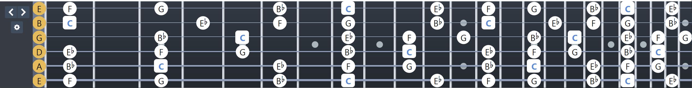

Getting Started with Guitar
Welcome to your guitar journey! This guide will help you learn the fundamental chords and techniques.
Understanding the Guitar
The guitar is a versatile and iconic musical instrument with six strings, played by strumming or plucking. It's used in various music genres like rock, jazz, blues, and classical. Guitars come in two main types: acoustic, which produces sound naturally, and electric, which requires an amplifier. Learning the guitar starts with understanding its parts—body, neck, strings, and frets—and practicing basic chords like C, G, and D. It's a great instrument for beginners and experts alike, offering endless possibilities for creativity and expression. 🎸
Tuning a guitar is the process of adjusting the tension of its strings to achieve the correct pitch. The standard tuning for a six-string guitar, from the thickest to the thinnest string, is E, A, D, G, B, and E. You can use a tuner, a tuning app, or tune by ear using a reference pitch like a piano or another instrument.
Each string corresponds to a tuning peg on the headstock. Turn the peg clockwise to tighten and raise the pitch or counterclockwise to loosen and lower the pitch. It's important to tune each string carefully to avoid over-tightening, which may cause it to snap. Regular tuning ensures your guitar sounds its best! 🎶
Finger Board Introduction


The fingerboard, or fretboard, is the part of the guitar neck where you press down on the strings to create different notes and chords. It consists of frets, which are metal strips that divide the neck into sections. Each fret represents a half-step in pitch. By pressing a string down behind a fret, you shorten its vibrating length, raising the pitch. The fingerboard is essential for playing melodies and chords, and mastering it is key to becoming a proficient guitarist.
To play a note, press down on the string with your finger just behind the fret. This creates a clear sound. Use your fingertips to avoid muting adjacent strings. Practice moving between frets and strings to build dexterity.